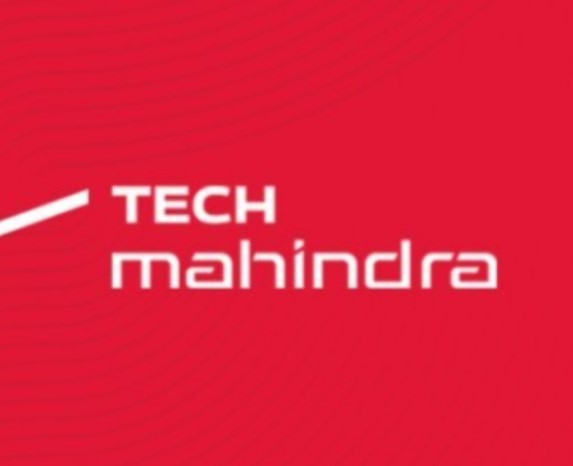
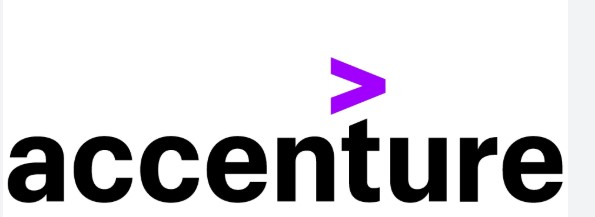
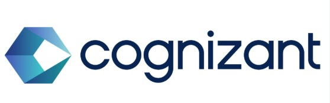

Gaurav N. Kagdelwar
Solution Architect/E2E Solution Designer passionate about building innovative solutions
Multi-Cloud Data Engineering & Cloud Architecture Specialist | AI & Analytics Practitioner
View My WorkAbout Me
Solutions-driven IT E2E Architect/Analyst with 14+ years experience leading cross-functional teams in the design, development, documentation, and delivery of process innovations driving the attainment of business goals.
Seek opportunities to transform company practices into fresh, cost-effective solutions leading to more efficient operations with ability to deliver results in a high-energy, fast-paced environment.
Certified Data Engineering and Cloud Architecture professional with expertise across Google Cloud Platform, Microsoft Azure, and AWS. Skilled in designing, building, and optimizing scalable data pipelines, cloud-native architectures, and AI-driven analytics solutions.
Certified in AI with strong knowledge in Claude Projects, Model Selection, Prompt Engineering, Output Evaluation and Workflow Integration
Adept at enabling organizations to leverage multi-cloud strategies for data integration, governance, and advanced insights. Experience leading cross-functional teams in the design, development, documentation, and delivery of process innovations driving the attainment of business goals.
Experience working for a large organisation at a client location in onshore-offshore model across geographically diverse teams. Experience working as a hands-on architect responsible for technical decisions and seeing them through completion.
Strong technical acumen across domains and technologies with good understanding of business and great zeal to learn. Ability to deliver, document and articulate complex architectures for the program at all levels: data, integration, application, security.
Experience in delivering solutions within large-scale program deliveries with deep knowledge of software solution architecture concepts, practice and tools. Experience in breaking down a monolith into Microservice oriented architecture.
Up to date with new technologies like Digital/IoT, Cloud-AWS, Azure, GCP and good knowledge of DWH systems and BI/Tableau for Data Analysis/Reporting.
Analysed, designed, and built data solutions for multiple enterprise level businesses to support the visualisation of their data from various sources, to understand and determine the impact and risk of changing their business processes.
Experience with ERP, Energy, Banking, Media-Entertainment, Telecom industries. Developed SQL scripts for query automation to remove the need for human interaction when executing SQL queries, increasing the volume and accuracy of queries significantly.
Created a Build and Release process for multiple projects. Strong understanding of Salesforce-CRM technology including technical and functional aspects. Leveraging clients' existing IT framework system for better data visibility and system integration.
Assisted in developing Project Scope, Business Requirements and Functional Requirements with internal team and clients with sound knowledge of SDLC cycle, Agile Methodologies, SCRUM, development, testing, deployment and support phases.
Strong work experience in DevOps model with good communication skills and ability to interact with client teams. Strong exposure and skills in Data Visualization/Data Engineering using Azure.
Create ER diagrams and write relational database queries, create database objects, and maintain referential integrity. Participate in development and maintenance of Data warehouses. Creating and deploying reports.
Expert in troubleshooting, maintenance & support of Oracle PeopleSoft application and other integrated apps such as Content Mgmt. Understanding customer requirements with clarity of thought and communication to translate business requirements/issues into technical requirements and design.
Business Analysis, requirement gathering, conceptual design, development, and implementation of modifications. Experience with architecture documentation and diagramming like UML, Archimate, draw.io etc.
Experience in functional analysis and design, UML, User stories and use cases with sound knowledge of Data structures & strong RDBMS skills.
Extensive knowledge of Telecom Domain, E2E stack for Telecom and BSS/OSS expertise with experience in E2E implementations, new development, modifications / medium to complex customization.
Extensive experience dealing with SOAP APIs and REST APIs based on TMF Standard. Extensive knowledge on EDM (Enterprise Data Modelling) and working in a container-based and/or serverless environment hosted on public/private cloud (Docker, OpenShift).
Good understanding of CI/CD concepts, including version control, branching models with appropriate quality control techniques (SONAR) and automated deployments.
Applied knowledge of different data interchange formats and Telecom APIs. Experience in File-based, Web-Service-based, Message-Based integration and Event Driven Architecture.
My Projects

All Projects
Solution Architect/E2E Designer for a Belgian Telco. Worked extensively on all systems E2E starting from CRM, Provisioning, Billing, Case/Complaint Mgmt Worked with Mobile, Fix(Cable/Fibre) and across segments - B2B, B2C, SOHO.
Desgined E2E Data Pipelines, implemented ETL/ELT pipelines using GCP Dataflow, optimized data storage and retrieval for structured and unstructured datasets
Tech/Tools used:Confluence/JIRA, Archimate, BPMN-UML, EDM, GCP/Big Query, TMF API's, SOAP-REST API's, PeopleSoft CRM, Salesforce, TIBCO, BSCS-Billing

All Projects
Worked as a Software Engineering Sr. Analyst on PeopleSoft FSCM/Finance in Account Payables for Duke Energy. Worked as an offshore developer as part of the SUT (Sales and Use Tax) in Account Payable Module of PeopleSoft
Tech/Tools used: PeopleSoft FSCM 9.1, PeopleTools, Peoplecode, SQL, SOAP-REST API's, Data-ETL, JIRA, CRM

All Projects
Worked as a Programmer Analyst on PeopleSoft Finance developing project in Peoplesoft/Peoplecode to process AMEX transactions for the end user
Tech/Tools used: PeopleSoft FSCM 9.1, PeopleTools-Peoplecode, HTML, CSS, JavaScript, HP-QC
Experience
Tech Mahindra
Designation: Solution Architect
03/2016 - Till Date
Accenture
Designation: Software Engineering Sr. Analyst
10/14 - 01/2016
Cognizant
Desgination: Programmer Analyst
08/11 - 09/2014
Tools
Tools/Skills/Programming Languages
Skills possessed along with the tools/COTS used
- 💡 Toosl/COTS: PeopleSoft, Salesforce/Vlocity, TIBCO, BSCS-Billing, EPC-Hansen Catalogue, GCP, Azure, AWS, ELK, Genesys-IVR, Documentum
- 💡 Programming languages: C/C++, Java - JSP/Struts/Hibernate/Springboot, Peoplecode, Javascript, Python
- 💡 Skills: Data Visualisation, Data Migration, Analytical Problem-Solving, E2E Solution Architecture & Design, ARIS based Architecture Design, TM Forum Compliant API Design, Enterprise Data Model Design, Domain Knowledge (ICT/Telco, Finance, Energy), Project Management, Software Development Lifecycle (SDLC), BPMN/UML/Architecture, CI/CD-DevOps
- 💡 AI/ML: Claude Projects, Knowledge Management, Model Selection, Output Evaluation, Prompt Engineering, Responsible AI, Troubleshooting, Workflow Integration
- 💡 Languages: English (Full Professional Competency), Hindi (Native), Marathi (Native), French(rudimentary)
Resume, Achievements and Certifications
Here are some of my key accomplishments. For more details, please download my full resume.
- 🏆 Awarded 'Standing Ovation', 'Pat on the back' and 'Bravo' awards for exceptional performance over the years. Consecutive ACER(high performer) awards for many years at current organisation
- 🚀 Led a team that increased user engagement by 25% through a new feature launch.
- 💡 Certified in Azure(Data Engineer), GCP(Professional Cloud Architect, Professional Data Engineer, Associate Data Engineer), AWS AI Practitioner, Claude(Certified Associate - Foundations) and TM Forum API's
Education
University of Pune
Bachelor of Computer Engineering
Pune, Maharashtra
07/2007 - 07/2011